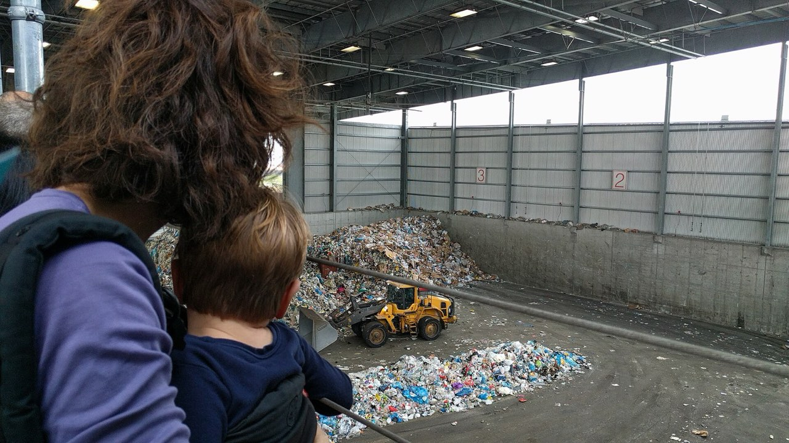

.jpg){kind=link}
{kind=link}
{kind=link}
Governed by design
Planning materials, decisions, assumptions, and partner roles are documented in registers so the work can be reviewed, transferred, and improved over time.

Michigan LTC Network is planning a two-site corridor for tire, rail-tie, biomass, and industrial material recovery in Coleman and Flint — documented, source-disciplined, and built to earn public trust before capital is deployed.
Scrap tires, retired rail ties, biomass, and industrial byproducts pile up in every county. The corridor brings together site planning, environmental review, partner coordination, community engagement, and long-term operating controls before major capital deployment.


Planning materials, decisions, assumptions, and partner roles are documented in registers so the work can be reviewed, transferred, and improved over time.
The model centers local reuse, brownfield reinvestment, workforce development planning, and clear public communication.
The planning process is structured to move from concept into permitting, financing, procurement, and site-level deployment.
Each workstream is designed to reduce uncertainty, protect public trust, and make the corridor investment-ready.
Document parcel conditions, utility needs, transportation access, reuse constraints, and permitting path.
Confirm available material streams, logistics assumptions, storage needs, and partner commitments.
Build defensible baselines and emissions-accounting methods suitable for funders and regulators.
Create plain-language materials, meeting records, feedback loops, and host-community commitments.
Map grants, tax tools, private capital, operating agreements, and accountability controls.
Translate planning into a sequenced path for engineering, permitting, procurement, and operations.
The current planning focus is a two-site corridor anchored by complementary recovery and logistics opportunities. New sites require written addenda and documented routing.
 Main Street, Coleman, Mich. · public domain
Main Street, Coleman, Mich. · public domain
Midland County planning site with on-site feedstock opportunities and co-location potential.
 Flint River, downtown Flint · USACE, public domain
Flint River, downtown Flint · USACE, public domain
Brownfield-aligned recovery planning site with logistics access and existing materials-reuse history.
Five principles govern every document, claim, and decision the project produces.
Record what is known, where it came from, and what still needs verification.
No awards, permits, or outcomes stated without a cited source.
New sites and scope changes require written documentation and routing.
Every deliverable, issue, and decision has an owner or responsible route.
Reviewers can trace source support, status, and approval history.

Registers, site files, funding trackers, templates, and source records live in a single audit-ready repository — organized so any reviewer can find status, sources, and approvals.
PublicLogic supports the network with governed delivery infrastructure:
{kind=link}
{kind=link}